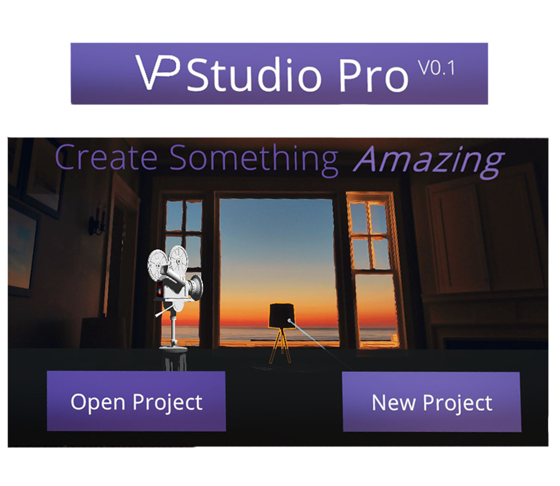
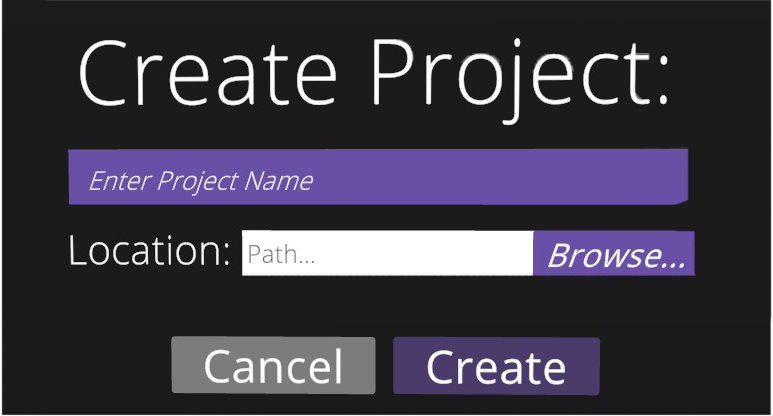
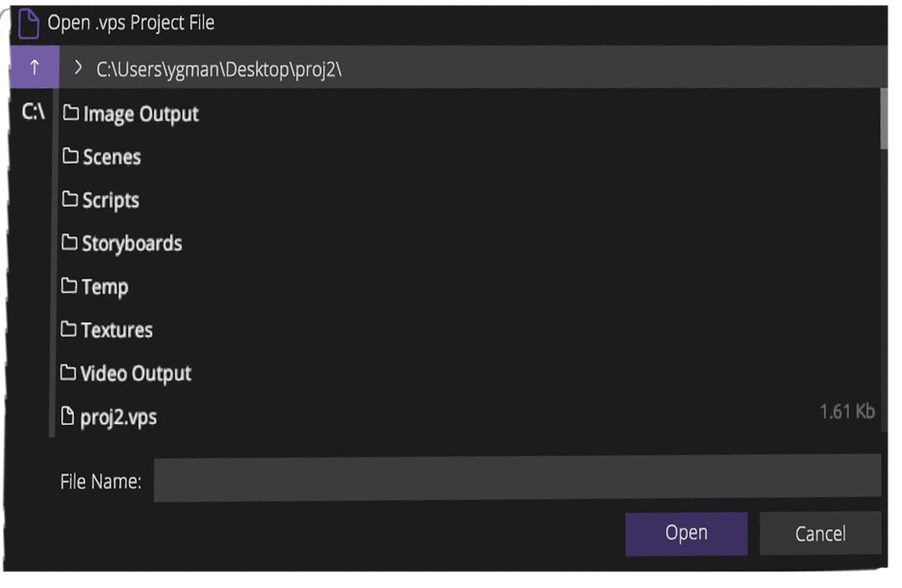

Getting Started
Creating a Project
To create a project, select the New Project option in the main menu (pictured below). You can use the pointer on your right controller to point, and the right trigger to click.

Next, choose a name and for the project (below) using the VR keyboard now enabled.

Next, choose a location using the file browser. 
When creating a project with Sceneforge, the software will automatically generate the required file structure in your specified directory. When opening a project, Sceneforge will check if the file structure is correct, and will fix/add any incorrect folders.
├─ Project Root Folder/
│ └─ 3D Models --- Place all 3D Model files here.
│ └─ Textures --- Place all .PNG textures here.
│ └─ 360 Images --- Place all .PNG 360 Degree/Pano images here.
│ └─ Audio --- Place all audio files here.
│ └─ Image Output --- This is where all taken photos are exported.
│ └─ Scenes --- This is where all scenes are stored
│ └─ Scripts --- This is where all scripts are stored.
│ └─ Storyboards --- This is where all storyboards are exported.
│ └─ Video Output --- This is where all taken videos are stored.
│ └─ [PROJECT NAME].vps --- This is the actual project file.
Opening an Existing Project
To Open an existing project, select the Open Project option in the main menu (pictured above).
Next, navigate to the location of your .vps file using the file browser (pictured above).
After loading, you will be taken to your loaded scene.
Importing Custom Assets
To import custom art assets, simply drag the file(s) to their respective folders in the project directory.
SceneForge Studio accepts different file types for different types of assets:
- For 3D Models, Sceneforge uses the GLTF format. It accepts .glb files and .gltf files.
It will also read .zip archives containing those formats and their textures. - For textures, at the moment SceneForge accepts only .png files. This ensures compatability across all uses of images in a project, including skyboxes and backdrop textures.
- For Skyboxes, SceneForge accepts only .png files. In order for the scene to display skies correctly, the image should be in the equirectangular 360 Degree/Panorama image format.